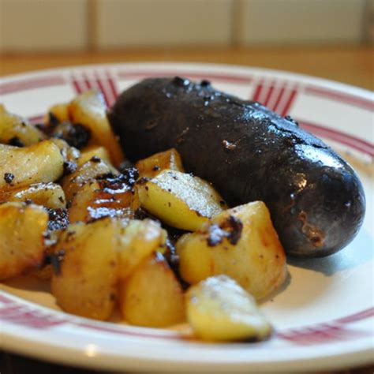

le boudin

Hmm le boudin c'est superbe. Ça ressemble un peu à du caca mais c'est délicieux. En voici la recette.
Pour faire du bon boudin, il vous faut :
- un boudin par personne
- des pommes
- des pommes (de terre cette fois-ci attention hihi)
- ne pas avoir peur de la mort
- etc
la recette
- préchauffer le four à autant de degrés que vous jugerez adéquat
- mettre le boudin dans le plat
- préparer les pommes, respectivement d'arbre et de terre, à la mode de chez vous
- enfourner le tout comme en 40 (lol attention ceci est une blague à prendre au second degré (celcius lol))
et voilà, le tour est joué. À vous de déguster !!!!